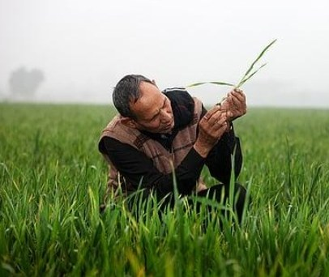
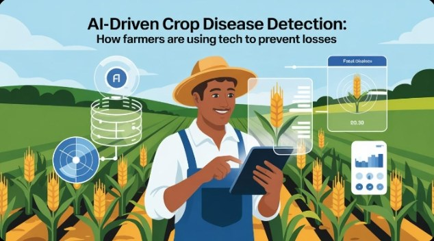

AI Disease Detection
Analyze supported crop images using a trained image-classification model.
Upload a clear crop-leaf image and get an AI-based prediction with practical, farmer-friendly guidance.



Designed to keep the experience clear, fast and useful from the first photo to the final guidance.
Analyze supported crop images using a trained image-classification model.
Unsuitable or non-plant images can be rejected before disease prediction.
Use a farmer-friendly interface with multilingual labels and guidance.
Large controls and responsive layouts for phones, tablets and desktops.
Upload
Choose a clear crop image.
Check
Validate image suitability.
Analyze
Run the 38-class model.
Understand
Read symptoms and guidance.
Start with one good image. CropCare AI handles the rest of the analysis flow.